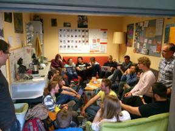

Wer sind wir?
ZaPF - schön und gut, aber wer organisiert das alles?
Das Orgateam
Eine Bundesfachschaftentagung organisiert sich nicht von allein und der Vorbereitungsaufwand ist nicht zu unterschätzen. Die 150 Teilnehmer, die teilweise Reisewege im 4-stelligen Kilometerbereich auf sich nehmen, nur um ihre Hochschule und ihre Studierenden zu vertreten, wollen für die Zeit der Tagung auch angemessen verpflegt, beschäftigt und untergebracht werden. Um dies zu bewerkstelligen und für einen möglichst reibungslosen und angenehmen Ablauf der Tagung zu sorgen, haben wir ein tatkräftiges Organisations-Team zusammengestellt, welches von mehreren Dutzend Helfern unterstützt wird.
- Hauptorga: Niklas Luhmann und Simon Henn
- Finanzen: Patrick Haiber
- Verpflegung: Oliver Irtenkauf
- Rahmenprogramm: Eva Hengeler
- IT: Robert Löffler
- Helferkoordination: Rebekka Garreis
- Unterkunft: Simon Henn
- Design und Büro: Benjamin Hammann
Der Verein
Der gemeinnützige, eingetragene Verein ZaPF e.V. dient der Förderung der Erziehung und Bildung durch das Physikstudium an den Hochschulen im deutschsprachigen Raum. Der Zweck wird verwirklicht durch die Arbeit als Dachverband und Koordinationsstelle der Physik-Fachschaften in diesem Gebiet. Der Verein soll den Informationsaustausch der einzelnen Fachschaften und dadurch eine überregionale Koordination ermöglichen. Insbesondere hilft er bei der Durchführung der halbjährigen Treffen der Vertreter der Physikstudierenden der Hochschulen im deutschsprachigen Bereich.
Der Verein hat seinen Sitz in Frankfurt am Main und seine Organe sind zum einen der Vorstand (aus bis zu sieben Personen bestehend) und zum anderen die Mitgliederversammlung. Der ZaPF e.V. verfolgt ausschließlich und unmittelbar gemeinnützige Zwecke im Sinne des Abschnitts Steuerbegünstigte Zwecke der Abgabenverordnung. Er ist selbstlos tätig, also verfolgt keine eigenwirtschaftlichen Zwecke. Mitglied des Vereins kann jede natürliche Person werden, welche die Satzung des Vereins anerkennt und in der Fachrichtung Physik an einer Hochschule ordentlich immatrikuliert ist. Es wird kein Mitgliedsbeitrag erhoben, denn der Verein finanziert sich durch öffentliche Mittel, Spenden und Gebühren.
Die Fachschaft
Die ausrichtende Fachschaft der Sommer-ZaPF 2016 ist die Fachschaft Physik der Universität Konstanz. Die Fachschaft besteht aus aktuell 25 Studierenden, die ihre Kommilitonen gegenüber den Professoren, der Uni-Verwaltung und nach außen hin vertreten. Wenn von der "Fachschaft" die Rede ist, wird je nach Kontext entweder die tatsächliche Studierendenschaft der Physik, die aktiven Studierenden oder das Studienfachschaftswahlgremium gemeint.

- Tagungsbüro: R501
- Fachschaftsraum: P626
- Telefon: 07531/88-3431
- Mail: fachschaft.physik@uni-konstanz.de
Die Uni
Die Universität Konstanz gehört zu den jüngeren Hochschulen in Baden-Württemberg. Sie wurde 1966 als Reformuniversität gegründet, sie wird also pünktlich zur ZaPF 50 Jahre alt. Bei der Gründung der südlichesten Universität Deutschlands wurde auf die Einrichtung von Instituten verzichtet. Stattdessen ist sie in drei Sektionen und diese wiederum in mehrere Fachbereiche gegliedert. Mit knapp 12.000 Studierenden ist die Universität Konstanz eine eher kleinere Campus-Universität. Sie liegt am Stadtrand idyllisch auf dem Gießberg, umgeben von Wald und Wiese und ist nur einen Katzensprung vom See entfernt. Sie ist gut mit dem Bus, Auto oder Fahrrad erreichbar.
Die Stadt
Konstanz ([ˈkɔnʃtants]) ist die größte Stadt am Bodensee, beherbergt 81.141 Bürger, im Sommer zusätzlich reichlich Urlauber, eine Universität und eine Hochschule. Die Geschichte des Ortes reicht bis in die römische Zeit zurück. Die Nähe zur Schweiz sorgt außerdem für ein besonderes Einkaufserlebnis am Wochenende.